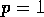

Constraints


Next: implicit value
Up: Symmetries
Previous: Combining Symmetries
There are several constraints on the symmetry list that are checked by
REDTEN, violating any of these will result in an error message.
- the block-size
 must be an integer.
must be an integer.
- there must be at least two pointers to each independent symmetry.
- the pointers must be non-negative integers, the first index
element corresponds to .
- the pointers must be in ascending order.
- blocks cannot overlap.
- the corresponding indextype sublists must be identical
(unless the symmetry is a trace symmetry).
- a block cannot extend beyond the end of the index.
There are several other constraints, as already mentioned, but a
direct check for these is not made, and failing to observe them will
lead to incorrect results.
The user should be aware that the internal form of the symmetry list is
somewhat different, and is held on the symmetry property of the
object.
John Harper
Wed Nov 16 13:34:23 EST 1994